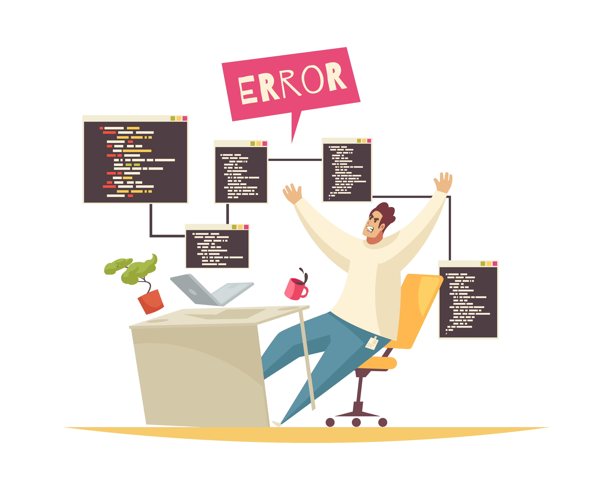

당신의 결과는?!
'ESTJ'
스스로 꼰대임을 인정하는 "QA개발자형"

What's on my desk...
책상 칸막이
Don't touch me

타이머
1초의 낭비도 용납불가
- 게으르거나, 일을 잘 못하거나, 목적의식이 없는 사람은 이해할수가 없고, 이해하기도 싫고, 마주치기도 싫다. 아니.. 진짜진짜..싫다..정말..혐오 (약간의 꼰대적 성향을 가지고 있는거, 나도 인정함)
- 이 험난한 세상에서 믿을것은 나뿐임. 내가 직접 찾아보거나, 관찰한거 아니면 잘 안믿음. 모든것에 팩트 체크 필수임. (가짜 뉴스에 속는 사람들도 이해 안가고 만나고 싶지 않은 부류.)
- 호랑이는 죽어서 가죽을 남기고 사람은 죽어서 이름을 남긴다고 했다. 이 세상에 태어났으면, 큰일 한번 하고 떠나고 싶은 욕구가 있다. 성공하고 싶음. 정말,,,, (성공할거야 걱정마,,)
- 그래서 목표가 생기면 '독하게' 행동해서 주변 사람들에게 엄청난 걱정을 받음. "너 그러다 큰일나... 몸좀 사려..." 하지만 영양제 잘 챙겨먹고 나만의 규칙대로 잘 살고 있는거임.
- 친구가 고민을 상담하면 공감하고 위로 해주는(사실은 그러는 척 하려고 노력하는)편. 속으로 상황을 판단하고 분석하고 결론을 내고 있는 중임.
- 가만히 있는게 젤 피곤하고 불안함. 어떻게 집에서 하루종일 누워 딩굴댈수가 있지? 나가서 노는걸 좋아하진 않지만, 뭐 이것저것 배우는건 좋아해서 가만히 있지를 못함. (원데이 클래스. 혁.명.적.)
- 나의 계획에 훼방을 놓고 싶다면 수만개의 근거를 가지고 와야함. 아니, 오기전 예약 부터 하세욤~~^^ 사실 수만개의 근거만으로도 부족함.
내 안에 QA 개발자가 있다고?!
- QA(Quality Assurance)는 이미 개발된 소프트웨어를 토대로 기획 의도나 목적에 따라 올바르게 구동하는가를 찾는 직무이다. 예를 들어 게임 소프트웨어의 QA는 게임을 하면서 버그를 찾아내는 아주..이상적인 일을 하고있는ㄱ..것.. (게임하면서 돈번다고...?)
- 목적과 목표에 어긋나는 것을 극도로 싫어하는 당신은 이미 QA의 자격을 갖춘셈이다.
- 특히 앉아서 말로만 하는것 보다 직접 몸으로 부딪히고 확인하는 것을 좋아하는 당신에게 QA 라는 직무는 안성맞춤일것이다.
- 은근한 꼰대 성향이 도움이 되기도 하는데, QA의 경우 융통성이 있으면 안되는 역할 중 하나이다.
- 아이디어보다는 문제를 찾고 이를 해결하는것, 잘못된것을 찾아내는 것, 생각만해도 짜릿하다면 지금 바로 도전해봐!
현실 QA 개발자가 되려면?
- 기초 언어:java , C언어
- 필수 지식:웹 개념(html, css), 데이터베이스
- 고급 스킬:selenium , TestNG , ANT

♥우리는 운명: iOS 개발자
⊗우리는 에러: 아키택처 개발자